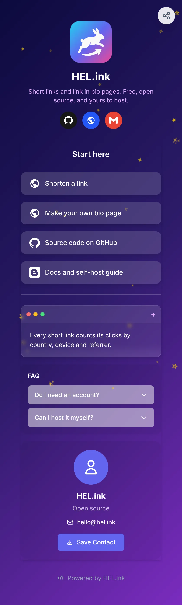

Short links.
Beautiful bio pages.All of it free, all of it yours.
Link pendek.
Halaman bio yang cantik.Semuanya gratis, semuanya milikmu.
HEL.ink shortens your links, counts every click and gives you a link in bio page at hel.ink/b/you. Every feature is included, with no premium tier, and you can run the whole thing on your own server. HEL.ink memendekkan link, menghitung setiap klik, dan memberi kamu halaman link in bio di hel.ink/b/namamu. Semua fitur sudah termasuk, tanpa paket premium, dan kamu bisa menjalankan semuanya di server sendiri.
git clone https://github.com/navi-crwn/hel.ink.git01 · FeaturesFitur
Everything included. No premium tier.Semua sudah termasuk. Tanpa paket premium.
Everything HEL.ink can do, at a glance. Every account gets all of it.Semua yang bisa dilakukan HEL.ink, sekilas. Setiap akun mendapat semuanya.
Short linksLink pendek
Random or custom slugs, with a password, an expiry date and a QR code when you want one.Slug acak atau custom, plus password, tanggal kedaluwarsa, dan QR code kalau perlu.
Link in Bio
One page for all your links at hel.ink/b/you: 20 themes, animations, embeds and 150+ brand icons.Satu halaman untuk semua link kamu di hel.ink/b/namamu: 20 tema, animasi, embed, dan 150+ ikon brand.
Click analyticsAnalitik klik
Clicks, countries and cities, devices, browsers and referrers, in real time.Klik, negara dan kota, perangkat, browser, dan referrer, secara real time.
QR codes
Download a QR for any link or bio page as PNG, SVG or JPG.Unduh QR untuk link atau halaman bio mana pun, dalam PNG, SVG, atau JPG.
Folders & tagsFolder & tag
Sort links into folders, tag them, search, act in bulk and export to CSV.Kelompokkan link ke folder, beri tag, cari, kelola sekaligus, dan ekspor ke CSV.
API & ShareXAPI & ShareX
A REST API with Bearer tokens, plus a ready-made ShareX config in Settings.REST API dengan token Bearer, plus konfigurasi ShareX siap pakai di Settings.
Safe sign-inLogin aman
Email and password or Google, with two-factor codes (TOTP) and a login history.Email dan password atau Google, dengan kode dua langkah (TOTP) dan riwayat login.
Private bio pagesHalaman bio privat
Lock a page with a password or an age check. Trackers only run after the visitor agrees.Kunci halaman dengan password atau cek usia. Tracker baru berjalan setelah pengunjung setuju.
Link commentsKomentar link
Leave notes on a link so you remember why it exists.Tinggalkan catatan di link supaya kamu ingat kenapa link itu dibuat.
Admin panelPanel admin
Users, links, bio pages, IP bans, domain blacklist and the job queue in one place.Pengguna, link, halaman bio, blokir IP, blacklist domain, dan antrean job dalam satu tempat.
Abuse protectionPerlindungan abuse
Rate limits, quotas, a domain blacklist, proxy/VPN checks and an hourly scan for phishing, scams and worse.Batas kecepatan, kuota, blacklist domain, cek proxy/VPN, dan pemindaian tiap jam untuk phishing, penipuan, dan lainnya.
Self-hostableBisa di-host sendiri
Laravel 12 on your own server, with MySQL, PostgreSQL or SQLite. Your data stays with you.Laravel 12 di server kamu sendiri, dengan MySQL, PostgreSQL, atau SQLite. Datamu tetap di tanganmu.
02 · Link in Bio
One page. Every link.Satu halaman. Semua link.
Put one link in your profile and let it carry the rest. Build the page with blocks, pick a theme, and watch the preview change as you type.Taruh satu link di profilmu, biar halaman ini yang membawa sisanya. Susun halaman dengan blok, pilih tema, dan lihat pratinjau berubah saat kamu mengetik.
- 20 themes, from Galaxy and Neon to Cherry Blossom and Matrix, or your own colors, fonts and CSS.20 tema, dari Galaxy dan Neon sampai Cherry Blossom dan Matrix, atau warna, font, dan CSS kamu sendiri.
- Blocks for links, text, images, YouTube, Spotify, maps, countdowns, FAQ, vCard and code.Blok untuk link, teks, gambar, YouTube, Spotify, peta, hitung mundur, FAQ, vCard, dan kode.
- Animations: rain, snow, stars or confetti behind the page, and buttons that fade, pop, glow or pulse.Animasi: hujan, salju, bintang, atau confetti di latar, dan tombol yang muncul, memantul, bersinar, atau berdenyut.
- Its own analytics: views, clicks per block, referrers, devices and countries.Analitik sendiri: kunjungan, klik per blok, referrer, perangkat, dan negara.
ExampleContoh
See it live.Lihat langsung.
HEL.ink's own bio page uses the Galaxy theme with a header, link buttons with brand icons, a text block, an FAQ and a contact card.Halaman bio milik HEL.ink sendiri memakai tema Galaxy, dengan header, tombol link berikon brand, blok teks, FAQ, dan kartu kontak.
- hel.ink/github → the source codekode sumber
- hel.ink/website → this websitewebsite ini
- hel.ink/selfhost → the self-host guidepanduan self-host
- hel.ink/documentation → the API referencereferensi API
- hel.ink/changelog → what changed in each releaseperubahan di setiap rilis

hel.ink/b/hel
03 · ShortenerPemendek link
Paste. Shorten. Know who clicked.Tempel. Pendekkan. Tahu siapa yang klik.
Choose your own slug or take a random one. Add a password, an expiry date or a QR code, then follow every click by country, device and referrer.Pilih slug sendiri atau pakai yang acak. Tambahkan password, tanggal kedaluwarsa, atau QR code, lalu ikuti setiap klik per negara, perangkat, dan referrer.
- No account needed to shorten a link. Guest links are deleted after 14 days without a click, and after 30 days at most; sign up to keep them and see their stats.Tanpa akun pun bisa memendekkan link. Link tamu dihapus setelah 14 hari tanpa klik, dan paling lama setelah 30 hari; daftar untuk menyimpannya dan melihat statistiknya.
- Unsafe links are stopped before they go live: blacklisted domains, phishing patterns and risky URLs.Link berbahaya dihentikan sebelum aktif: domain yang diblacklist, pola phishing, dan URL berisiko.
04 · API
Shorten from anywhere.Pendekkan dari mana saja.
Make a token in Settings → API and send one request. It works from scripts, the command line, and ShareX (the config file is ready to download in Settings).Buat token di Settings → API, lalu kirim satu request. Bisa dari script, command line, dan ShareX (file konfigurasinya siap diunduh di Settings).
curl -X POST https://hel.ink/api/shorten \
-H "Authorization: Bearer YOUR_TOKEN" \
-H "Content-Type: application/json" \
-d '{"url": "https://example.com", "alias": "my-link"}'
alias is optional. The reply holds the short url and its slug.alias boleh dikosongkan. Balasannya berisi url pendek dan slug-nya.
05 · Self-host
Your server. Your links.Server kamu. Link kamu.
Use hel.ink as it is, or run your own copy. You need PHP 8.2+, Composer, Node.js 18+ and a database (MySQL 8, PostgreSQL 13 or SQLite). Redis is optional.Pakai hel.ink apa adanya, atau jalankan salinanmu sendiri. Kamu butuh PHP 8.2+, Composer, Node.js 18+, dan database (MySQL 8, PostgreSQL 13, atau SQLite). Redis opsional.
git clone https://github.com/navi-crwn/hel.ink.git cd hel.ink composer install npm install
cp .env.example .env php artisan key:generate php artisan migrate php artisan storage:link
Fill in the database, mail and (optionally) Google login in .env.Isi database, email, dan (opsional) login Google di .env.
npm run build
php artisan serve
# production: also run
php artisan queue:work
Then open http://localhost:8000.Lalu buka http://localhost:8000.
The full guide, with every .env setting, is in the README.Panduan lengkap, dengan semua pengaturan .env, ada di README.
06 · FAQ
Questions, answered.Pertanyaan, terjawab.
Is it really free?Benar-benar gratis?
Yes. hel.ink has no paid plan and no locked features, and the code is MIT licensed, so you can run, change and share it.Ya. hel.ink tidak punya paket berbayar dan tidak ada fitur yang dikunci, dan kodenya berlisensi MIT, jadi kamu boleh menjalankan, mengubah, dan membagikannya.
Do I need an account?Perlu akun?
Not to shorten a link. Guest links are deleted after 14 days without a click, and after 30 days at most. With an account you keep your links, get analytics, folders, the API and a bio page.Tidak untuk memendekkan link. Link tamu dihapus setelah 14 hari tanpa klik, dan paling lama setelah 30 hari. Dengan akun, link kamu tersimpan, dan kamu dapat analitik, folder, API, dan halaman bio.
Where is my bio page?Di mana halaman bio saya?
At hel.ink/b/ followed by the name you pick, for example hel.ink/b/hel. Create it under Dashboard → Link in Bio.Di hel.ink/b/ lalu nama yang kamu pilih, misalnya hel.ink/b/hel. Buat lewat Dashboard → Link in Bio.
Can I use my own domain?Bisa pakai domain sendiri?
Yes, by hosting your own copy: set APP_URL in .env to your domain and every short link and bio page uses it.Bisa, dengan meng-host salinan sendiri: isi APP_URL di .env dengan domainmu, maka semua link pendek dan halaman bio memakainya.
What do visitors' clicks record?Apa yang tercatat dari klik pengunjung?
The time, country and city, device, browser and referrer, so you can see where clicks come from. Tracking pixels on bio pages only load after the visitor agrees.Waktu, negara dan kota, perangkat, browser, dan referrer, supaya kamu tahu asal klik. Pixel pelacak di halaman bio baru dimuat setelah pengunjung setuju.
How do I report a bad link?Bagaimana melaporkan link berbahaya?
Use the report form on hel.ink. Reports go to the admin Abuse page, next to the findings of the automatic scan.Pakai formulir laporan di hel.ink. Laporan masuk ke halaman Abuse di panel admin, bersama temuan dari pemindaian otomatis.
Make your links hop.Bikin link kamu melompat.
Short, fast, and yours. The rabbit agrees.Pendek, cepat, dan milikmu. Kelincinya setuju.